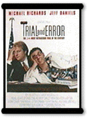
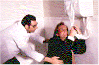

|
|
|
| Movie Credits | Buy It! |
Trial and Error
Review by Carrie
Gorringe
Posted 30 May 1997
|  | Directed by Jonathan Lynn Starring Jeff Daniels, Michael Richards,
Screenplay by Sarah Bernstein |
One week before lawyer Charles Tuttle (Daniels), is due to marry the boss’ daughter, he is dispatched by Boss Whitfield (Pressman) to a dreary little hamlet in Nevada. Tuttle’s mission is to dredge the legal muck and extricate from it one Benny Gibbs (Torn), the perennial tarnish on the Whitfield family’s sterling reputation. Tuttle’s reputation is at stake as well: if he loses the case, he will also lose his corner office, the luster from his Yale law-school education, and his impending nuptials to the ditzy Tiffany (Wentworth). Tuttle’s real Achilles’ Heel, however, comes not from the impending case, but from his head case of a friend, Richard Rietti (Michaels). With his rubbery-limbed antics on stage, and his tenuous grasp of how the world really works, Rietti’s only role in life will be to play a place-holder in the unemployment line, as well as the bane of Tuttle’s existence. Rietti’s plans to hold a bachelor party having been thwarted by the trial, he decides to take them on the road to Nevada. This is the first mishap of many that ends up casting Rietti in the role of his life: he must become Charles Tuttle, right down to the legal knowledge. It’s a role he is risibly ill-equipped to play, as the attractive prosecutor, Elizabeth Gardner (Steen), suspects. With more free time on his hands than he initially expected to have, Tuttle has yet another identity crisis when he falls in love with Billie Tyler (Theron), a local barmaid and free spirit who reads Walt Whitman and gazes at the stars in her non-serving moments.
It has to be said that director Lynn has mined this turf before, and with better yields. Five years ago, he directed My Cousin Vinny, which shares so many characteristics with Trial and Error that the latter could almost be called MCV Lite. There’s the lawyer who is out of his depth, the hostility of the local hamletfolk, a cynical judge, the lawyer’s hysterical love interest, the rabid prosecutor, etc. What Trial and Error does not share with its predecessor, to its eventual detriment, is enough of the Tex-Avery style of zaniness that kept My Cousin Vinny dancing along a precariously-constructed line of common sense, not to mention sanity; much of the film’s fun came from speculating how long the film could maintain this danse macabre along a knife-edge without falling into mediocrity. By the time said occurrence took place, the final credits had started rolling, and the danger had long since passed. The difference between the two films lies in their scripts: My Cousin Vinny never pretended to be the "message" film into which Trial and Error distorts itself by the final reels. Instead, the former film reveled in its role as unabashed entertainment, and letting the messages fall by the wayside, or come through at their own sweet pace. Trial and Error, unfortunately, beats the audience over the head with too many lachrymose warning about the dangers of self-deception; it wants to be, well, significant. In disdaining its proper role as light comedy, it becomes weighed down with pretentious freight, a decision taken by the filmmaker that leads to portentous consequences for the film as a whole. The lesson to be learned here is as follows: if, in making a film (or nearly remaking one), you choose to adhere to a successful formula, then you should remember not to jettison the good in favor of the bad.
 Despite the film's
lapse into cloying sentimentality, there are some pleasures to be had from Trial and
Error. Surprisingly, much of the acting between the principals, is quite good, making
the film’s central flaw more bearable than it could have been. Jeff Daniels, as he
does in so many comedies, plays the hysterical-everyman role to never-quiet perfection.
Michael Richards is, well, Michael Richards, and he, too, plays that role to perfection;
whether or not you’ll like this film is extremely dependent upon how much you like
Richards as a Cosmo Kramer-like center of attention. Fresh from her role as the hilarious
dominatrix/hit woman in the otherwise stale Two Days in the Valley, and a bit part
as the sullen girlfriend in That Thing You Do!, Theron is touching and funny as the
girl who simply wants to love a good man, if she can just turn Tuttle into one.
There’s a good breakout role for this talented actress somewhere, but that place
isn’t here. She and the others are victims of a filmmaker’s felony, but they may
suffer more punishment than the miscreant.
Despite the film's
lapse into cloying sentimentality, there are some pleasures to be had from Trial and
Error. Surprisingly, much of the acting between the principals, is quite good, making
the film’s central flaw more bearable than it could have been. Jeff Daniels, as he
does in so many comedies, plays the hysterical-everyman role to never-quiet perfection.
Michael Richards is, well, Michael Richards, and he, too, plays that role to perfection;
whether or not you’ll like this film is extremely dependent upon how much you like
Richards as a Cosmo Kramer-like center of attention. Fresh from her role as the hilarious
dominatrix/hit woman in the otherwise stale Two Days in the Valley, and a bit part
as the sullen girlfriend in That Thing You Do!, Theron is touching and funny as the
girl who simply wants to love a good man, if she can just turn Tuttle into one.
There’s a good breakout role for this talented actress somewhere, but that place
isn’t here. She and the others are victims of a filmmaker’s felony, but they may
suffer more punishment than the miscreant.
Contents | Features | Reviews | Books | Archives | Store
Copyright © 1999 by Nitrate Productions, Inc. All Rights Reserved.